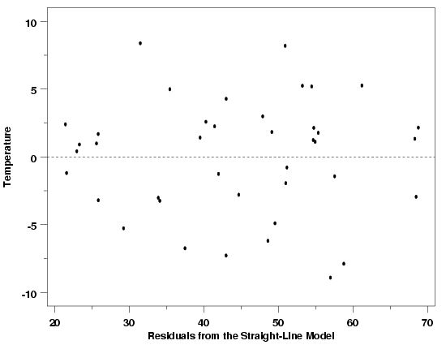
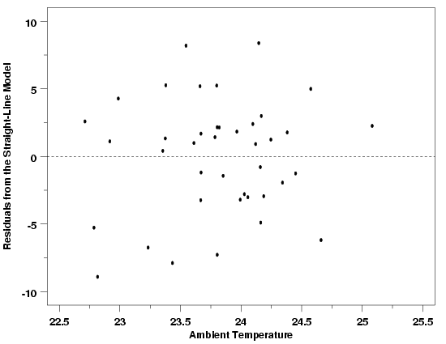
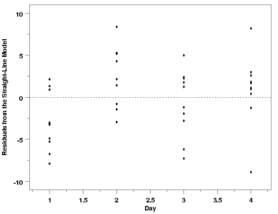

4.4. Data Analysis for Process Modeling
4.4.4. How can I tell if a model fits my data?
4.4.4.1. |
How can I assess the sufficiency of the functional part of the model? |
{kind=link}
{kind=link}
{kind=link}


|
4.
Process Modeling
4.4. Data Analysis for Process Modeling 4.4.4. How can I tell if a model fits my data?
|
|||
| Main Tool: Scatter Plots | Scatter plots of the residuals versus the predictor variables in the model and versus potential predictors that are not included in the model are the primary plots used to assess sufficiency of the functional part of the model. Plots in which the residuals do not exhibit any systematic structure indicate that the model fits the data well. Plots of the residuals versus other predictor variables, or potential predictors, that exhibit systematic structure indicate that the form of the function can be improved in some way. | ||
| Pressure / Temperature Example | The residual scatter plot below, of the residuals from a straight line fit to the Pressure/Temperature data introduced in Section 4.1.1. and also discussed in the previous section, does not indicate any problems with the model. The reference line at 0 emphasizes that the residuals are split about 50-50 between positive and negative. There are no systematic patterns apparent in this plot. Of course, just as the R2 statistic cannot justify a particular model on its own, no single residual plot can completely justify the adoption of a particular model either. If a plot of these residuals versus another variable did show systematic structure, the form of model with respect to that variable would need to be changed or that variable, if not in the model, would need to be added to the model. It is important to plot the residuals versus every available variable to ensure that a candidate model is the best model possible. | ||
|  | |||
| Importance of Environmental Variables | One important class of potential predictor variables that is often overlooked is environmental variables. Environmental variables include things like ambient temperature in the area where measurements are being made and ambient humidity. In most cases environmental variables are not expected to have any noticeable effect on the process, but it is always good practice to check for unanticipated problems caused by environmental conditions. Sometimes the catch-all environmental variables can also be used to assess the validity of a model. For example, if an experiment is run over several days, a plot of the residuals versus day can be used to check for differences in the experimental conditions at different times. Any differences observed will not necessarily be attributable to a specific cause, but could justify further experiments to try to identify factors missing from the model, or other model misspecifications. The two residual plots below show the pressure/temperature residuals versus ambient lab temperature and day. In both cases the plots provide further evidence that the straight line model gives an adequate description of the data. The plot of the residuals versus day does look a little suspicious with a slight cyclic pattern between days, but doesn't indicate any overwhelming problems. It is likely that this apparent difference between days is just due to the random variation in the data. | ||
| Pressure / Temperature Residuals vs Environmental Variables |  | ||
|  | |||
| Residual Scatter Plots Work Well for All Methods | The examples of residual plots given above are for the simplest possible case, straight line regression via least squares, but the residual plots are used in exactly the same way for almost all of the other statistical methods used for model building. For example, the residual plot below is for the LOESS model fit to the thermocouple calibration data introduced in Section 4.1.3.2. Like the plots above, this plot does not signal any problems with the fit of the LOESS model to the data. The residuals are scattered both above and below the reference line at all temperatures. Residuals adjacent to one another in the plot do not tend to have similar signs. There are no obvious systematic patterns of any type in this plot. | ||
| Validation of LOESS Model for Thermocouple Calibration |
|
||
| An Alternative to the LOESS Model | Based on the plot of voltage (response) versus the temperature (predictor) for the thermocouple calibration data, a quadratic model would have been a reasonable initial model for these data. The quadratic model is the simplest possible model that could account for the curvature in the data. The scatter plot of the residuals versus temperature for a quadratic model fit to the data clearly indicates that it is a poor fit, however. This residual plot shows strong cyclic structure in the residuals. If the quadratic model did fit the data, then this structure would not be left behind in the residuals. One thing to note in comparing the residual plots for the quadratic and LOESS models, besides the amount of structure remaining in the data in each case, is the difference in the scales of the two plots. The residuals from the quadratic model have a range that is approximately fifty times the range of the LOESS residuals. | ||
| Validation of the Quadratic Model |
|
||